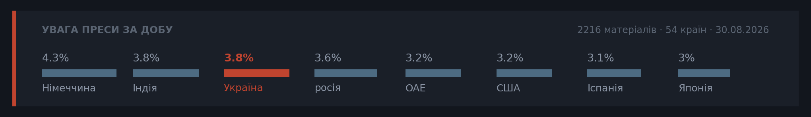

Ранковий бріф · огляд світової преси
Це досі Онтаріо



🌍ГОЛОВНЕ
Отже, ніч на Київщині й Запоріжжі знову була гучною: за даними Повітряних сил, Росія вдарила двома балістичними «Іскандерами» і щонайменше 130 дронами, під ударом опинився й центр «Пирогово» під Києвом. Число загиблих на складі боєприпасів у Мила зросло до 38 (за Зеленським), а Міноборони РФ офіційно заявило, що готує «масовані удари» по українській енергетиці — це піднімає ставки перед вересневим рішенням Мерца щодо санкцій (5 вересня) (ескалація ударів по енергетиці, 4-й день).
Біля Північного Кіпру перевернувся пором, що йшов із Кірінії: за різними джерелами, на борту було від 267 до 279 людей, загинуло щонайменше сім, 23 досі шукають. Турецька поліція вже затримала вісім осіб — причина катастрофи поки не встановлена, і саме це відкриває найцікавіше питання найближчих тижнів: хто відповідатиме.
Ісландія вдруге за кілька років сказала ЄС «ні»: 52,8% проти відновлення переговорів про вступ проти 47,2% за, явка — 82,5%. Це саме той сценарій, у якому не справдився наш прогноз про перемогу «так»; сам острів вирішив далі жити без цього питання, а офіційний Рейк'явік дав зрозуміти — подальших кроків до Брюсселя найближчим часом не буде.
У Гімалаях ситуація не покращується: за AP, кількість зниклих на кордоні Непалу й Китаю перевищила 3000, а одна з ключових доріг до постраждалих районів обвалилася вже через чотири дні після самої повені — рятувальники тепер не лише шукають людей у затоплених тунелях, а й пробиваються туди самі (наслідки повені в Гімалаях, 5-й день).
🔀РОЗКОЛ ОПТИКИ
Сюжет перший: провал ісландського референдуму про вступ до ЄС.
Замовчують: жодне з видань прямо не пов'язує результат із гіпотезою про тиск Трампа на Данію щодо Гренландії, хоча шведське Dagens Nyheter піднімало цю лінію ще вчора.
Чому розходяться: білоруське державне агентство не має власного інтересу в темі євроінтеграції й тому лишається нейтральним; проєвропейське Politico Europe зацікавлене показати провал розширення як системну проблему Брюсселя; німецька консервативна преса використовує чужий референдум, щоб говорити про внутрішню євроскептичну втому; словенське видання дивиться на подію крізь вузьку галузеву призму, не бажаючи вступати в загальноєвропейську дискусію.
Сюжет другий: перейменування Google Maps озера Онтаріо на «Lake America».
Замовчують: жодне видання не ставить питання, чи взагалі має право президентський указ змінювати назви геооб'єктів без окремого рішення Конгресу.
Чому розходяться: канадська преса розколота зсередини — ділова Globe тримає нейтралітет, тоді як консервативна National Post підсилює образ Форда-борця; американське видання воліє показати епізод як черговий фарс адміністрації, не займаючи бік; французька газета використовує сюжет як ілюстрацію ширшої тези про підкорення техгігантів владі Трампа, їй самий спір Канада-США нецікавий.
🔗ЩО З ЧОГО ВИПЛИВАЄ
Ескалація по енергетиці: удар по НПЗ у Киришах (кінець серпня) → офіційна заява Міноборони РФ про підготовку «масованих ударів» у відповідь → сьогоднішній нічний удар балістикою й дронами по Київщині та Запоріжжю → до чого веде: прискорення рішення Мерца щодо санкцій і зростання ризику зимових блекаутів в Україні.
Венесуельська нафта: заява Трампа про угоду з Венесуелою (кінець серпня) → наголос Родрігес на збереженні суверенітету над надрами → сьогоднішнє уточнення структури угоди → до чого веде: питання про реального оператора-партнера лишається відкритим, а ABC News вже сумнівається у швидкому нарощуванні видобутку.
Норвезьке спадкоємство: смерть короля Гаральда V → перехід трону до Хокона → присяга нового короля призначена на 1 вересня → до чого веде: очікування дати державного похорону Гаральда, яку мають оголосити близько 3 вересня.
📍ПУЛЬС КРАЇН
💰ГРОШІ
Скотт Бессент повторно попередив, що вимушений розпродаж японських активів вдарить по дохідності казначейських облігацій США на тлі держборгу в 40 трильйонів (сигнали Fed, тижні поспіль).
Структура нафтової угоди США-Венесуела частково розкрита: 25 років дії, зростання видобутку до 1,5 млн барелів на добу, поповнення Стратегічного резерву США — але оператор-партнер і реальні терміни нарощування видобутку досі не названі.
Росія продовжила заборону експорту дизельного палива для НПЗ до 30 вересня заради стабілізації внутрішнього ринку.
Єврокомісія готує обмеження короткострокової оренди житла через платформи — вплине на туристичний ринок кількох країн ЄС одночасно.
🗞МАСОВА ОПТИКА
Поки якісна преса розбирає провал ісландського референдуму й структуру нафтової угоди з Венесуелою, Bild переймається шоковим діагнозом зірки «Боруссії» та бджолою, яка вжалила телеведучу просто в ефірі.
Daily Mail розганяє тему «текстів-ознак розлучення» й новий засіб від целюліту, тоді як про повінь у Непалі британський таблоїд узагалі мовчить.
Індійський Times Now головною темою дня зробив перемогу на чемпіонаті світу з пікелболу — а не 149 співвітчизників, евакуйованих із зони лиха в Непалі, про яких того ж дня повідомило МЗС.
🎯УКРАЇНСЬКИЙ ВИМІР
Погроза РФ про «масовані удари» по енергетиці означає, що українські комунальники вже готуються повторити минулорічний сценарій точкових відключень — а швидкість, із якою партнери оформлять нові обмеження проти Москви, безпосередньо вплине на те, наскільки боляче буде взимку.
Перегляд логістики «Нової пошти» — сигнал, що бізнес закладає постійні удари в норму роботи; це позначиться на швидкості доставки й витратах для звичайних споживачів.
Бельгія не хоче передавати заморожені активи РФ на підтримку України, тоді як Київ, за Dnevnik, хоче достроково використати позику ЄС для покриття бюджетного дефіциту — гальмування першого підсилює тиск на друге.
🕳СЛІПА ЗОНА
Хакерська атака на Берлін (вимога Rhysida — 2 млн євро за 6 ТБ даних) уже другий день поспіль не згадується в жодному німецькому виданні сьогоднішнього дайджесту, хоча дедлайн ультиматуму наближається; мовчать саме німецькі джерела — тема токсична для міської влади за будь-якого результату, платити чи ні.
Точної зведеної статистики жертв повені в Гімалаях досі не існує: білоруське BelTA дає цифру 788 загиблих, інші джерела говорять про понад 3000 зниклих безвісти — і жодне велике агентство не намагається звести непальські й китайські дані в єдину картину, оскільки Пекін традиційно не розкриває деталей про постраждалі райони на своїй території.
Гіпотезу шведського Dagens Nyheter про те, що провал ісландського референдуму зміцнить позиції Трампа щодо Гренландії, сьогодні не підхопило жодне інше видання в дайджесті — імовірно тому, що це поки лише спекуляція без офіційної заяви США, а увагу забрали пором і Венесуела.
📡РАДАР
Середня впевненість: France 24 — єдине джерело, яке прямо пов'язує придушення заколоту в Ніамеї з участю російського «Африканського корпусу»; інші видання (Premium Times, Daily Nation) кажуть лише про «контроль ситуації» власними силами. Якщо підтвердиться — сигнал зростання воєнної залежності хунти від Москви.
Висока впевненість: Кремль підтвердив зустріч Путіна і Сі 1 вересня на полях саміту ШОС у Бішкеку, а South China Morning Post уточнює, що в центрі уваги буде газопровід «Сила Сибіру-2», а не заяви щодо України. Ґрунтується на двох незалежних азійських джерелах з узгодженими деталями.
Низька впевненість: шведське Dagens Nyheter повідомляє про «масову втечу з міст на сході Росії через страх дронів» — можливий ранній сигнал внутрішньої тривоги перед новою хвилею мобілізації, але це поки одне джерело без підтверджень.
🔮ПРОГНОЗИ
Наші:
Ісландський парламент офіційно розпочне процедуру відкликання заявки на вступ до ЄС до 20.09.2026
Влада Північного Кіпру чи Туреччини висуне офіційні звинувачення капітану або власнику затонулого порома до 15.09.2026
Google поширить перейменування «Lake America» за межі версії для користувачів США до 15.09.2026
Кажуть інші:
Заступник міністра закордонних справ Ірану (за Al Arabiya): Ормузька протока не запрацює в повному режимі, поки США не виконають взятих зобов'язань — Тегеран не поспішає.
ABC News (редакційна оцінка): попри угоду з Венесуелою, швидке й масштабне нарощування видобутку нафти малоймовірне.
🗓ЩО ПОПЕРЕДУ
ТИЖДЕНЬ ОДНИМ АБЗАЦОМ
Головний зсув тижня — не сама ескалація ударів по Україні, а те, як на неї відреагував Захід: від заспокійливої риторики Трампа в понеділок ("Путін не нападе на НАТО") до готовності Берліна вперше публічно назвати Росію відповідальною за конкретний інцидент і ввести санкції. Паралельно два сюжети — ісландський референдум і статистика жертв у Гімалаях — показали, наскільки легко прогнози й офіційні цифри розходяться з реальністю: перший провалив наш прогноз, друга досі не має єдиної version правди між Непалом, Індією та Китаєм. Тиждень закінчується не відповідями, а трьома датами-розв'язками (31 серпня, 1 вересня, 5 вересня), які мають вирішити одразу чотири лінії, що тягнуться від понеділка.
📈 ЩО ЗРУШИЛОСЬ
Удари РФ по Україні та реакція Німеччини. У понеділок — одиничний епізод і заяви Трампа про "хороші розмови" з Путіним. До п'ятниці — четверта доба поспіль ударів, офіційна заява Міноборони РФ про підготовку "масованих ударів" по енергетиці, і вперше Мерц готовий назвати Росію відповідальною за дрон над Лейпцигом із конкретним горизонтом 5 вересня. Переломний момент — вибух на складі в Мила (37-38 загиблих): саме після нього тема з "чергового обстрілу" перетворилась на привід для німецької санкційної відповіді.
Нафтова угода США-Венесуела. У середу — гучний заголовок "найбільша угода в історії" без жодних деталей, і європейські видання відкрито питали, чи це не обман. До п'ятниці структура частково розкрита: 25 років дії, зростання видобутку до 1,5 млн барелів/добу, поповнення Стратегічного резерву США. Переломний момент — власне оприлюднення параметрів, хоча оператор-партнер досі не названий, і ABC News вже сумнівається у швидкості реалізації.
Норвезьке спадкоємство. Від шоку смерті короля Гаральда V у четвер до майже завершеного переходу влади в п'ятницю: присяга Хокона VIII призначена, дата похорону очікується 3 вересня. Але з'явився й новий сюжет усередині старого — німецькі й швейцарські видання почали писати про скепсис щодо нової королеви через родинні скандали, тоді як норвезька преса цю тему демонстративно не підхоплює.
Заколот у Нігері. У четвер — сухе "хунта контролює ситуацію власними силами". У п'ятницю з'явилась версія France 24 про те, що придушити заколот допоміг російський "Африканський корпус" — перший натяк на воєнну, а не лише політичну залежність режиму від Москви. Поки не підтверджено іншими джерелами, але це вже інша рамка.
Zondacrypto в Польщі. Від арешту Пєсєвича в понеділок до тримісячного попереднього ув'язнення в п'ятницю — процесуальний рух є, хоча до кінця тижня тема випала з дайджестів, витіснена іншими подіями.
📉 ЩО ЗГАСЛО
Скандал Zondacrypto після середи практично зникає з поля зору — не вирішився, а був витіснений ударами по Києву й ісландським референдумом; наступний крок (можливе відсторонення з посади голови НОК) досі не настав.
Хакерська атака на Берлін (Rhysida, вимога 2 млн євро за 6 ТБ даних) гриміла в середу, а вже в п'ятницю ми фіксуємо повне мовчання німецьких медіа другий день поспіль, попри наближення дедлайну ультиматуму. Це не розв'язка — це витіснення теми, яка стала токсичною для міської влади за будь-якого результату.
Зняття китайських генералів Чжан Юся і Лю Женьлі — сюжет, який весь тиждень не рухається взагалі: Пекін мовчить понад тиждень, і жодне нове джерело крім SCMP не додає деталей. Це не згасання через розв'язку, а застигла тема без розвитку.
🔀ЗСУВ ОПТИКИ
Ісландський референдум про переговори з ЄС. У понеділок-вівторок домінувала рамка "формальність, яка нічого не змінить" — сам колишній прем'єр казав, що результат "не матиме значення". До п'ятниці, коли "ні" перемогло з різницею 52,8/47,2, оптика розкололась: білоруське державне агентство подало це як суху статистику без інтересу до наслідків, Politico Europe — як удар по темпу розширення ЄС, а німецька FAZ вписала результат у ширшу тезу про слабшання притягальності Союзу навіть серед його прихильників. Момент зламу — саме оголошення остаточних цифр: до нього всі говорили про "непринциповість" голосування, після — про системний сигнал.
🎯РАХУНОК ПРОГНОЗІВ
Наші: з горизонтом, що вже настав цього тижня, — один прогноз, і той провалився. Ми давали 55% на перемогу "так" на ісландському референдумі, реальність — переконливе "ні". Помилка методологічна: недооцінили розкол між Рейк'явіком і сільськими округами, поклавшись на загальний тренд опитувань. Рахунок: 0 з 1.
Інші: жоден із перевірюваних прогнозів названих джерел цього тижня не досяг свого горизонту (зустріч Путіна-Сі і присяга Хокона VIII заплановані на 1 вересня, тобто за межами тижня). Рахунок: 0 з 0 — реєстр поки порожній для оцінки.
Загальний рахунок за весь час по обох реєстрах: наші — 0 з 1, чужі — 0 з 0.
🔭 ТИЖДЕНЬ ПОПЕРЕДУ
31 серпня — голосування Скупщини Сербії щодо процедури, яка може заблокувати підготовку похорону Младичу; тест на те, чи витримає угода з ЄС тиск хорватського вето.
1 вересня — присяга Хокона VIII королем Норвегії та очікувана зустріч Путіна і Сі в Бішкеку, де темою названо "Силу Сибіру-2".
3 вересня — очікується оголошення дати державного похорону Гаральда V.
5 вересня — горизонт заяви Мерца щодо відповідальності Росії за дрон у Лейпцигу й нового санкційного пакета — ключова точка, від якої залежить, чи стане цей тиждень початком нової фази реакції Європи, чи черговим епізодом, що загасне без наслідків.
🗓КАЛЕНДАР ПОДІЙ ПОПЕРЕДУ
Виноски
Базова лінія у прогнозах. Відсоток «базово» — це ймовірність події за інерцією, якщо ніхто нічого не робитиме й нічого не зміниться. Друге число — наша впевненість. Прогноз має сенс лише тоді, коли ці числа розходяться: збіг означає, що ми просто описали поточний стан.
Відсотки в карті уваги. Частка країни в денному обсязі зібраних матеріалів. Не показник важливості події, а показник того, скільки місця країна зайняла в новинному потоці за добу. Різкий стрибок частки зазвичай означає, що в країні щось відбувається.
Стрічки, які не відповіли. Не відповіли: Caixin, Guancha, The Paper, Yicai, Corriere della Sera, Il Foglio, Milenio, Ekonomichna Pravda, Liga.net